비서-2급 (2018-05-13 기출문제)
1과목: 비서실무
1. 비서업무를 수행하기 위하여 필요한 지식 중 중요도가 가장 낮은 것은?
- 심리학 - 조직심리학, 산업심리학 등
- 법학 - 상법, 기업법, 노동법 등
- 컴퓨터학 - 프로그래밍 언어, 컴퓨터 운영 시스템 등
- 경제학 - 경제와 사회, 환율과 금리 변동 등
(정답률: 45%)

2. 현재 시각 오후 4시 50분으로 상사인 이영태 전무의 회의가 예정보다 지연되고 있다. 박 비서는 상사로부터 오늘 저녁 6시로 예정된 오성길 교수와의 저녁 식사 약속을 취소하라는 지시를 받았다. 이 업무를 수행하는 비서의 태도로 가장 적절한 것은?
- 오성길 교수에게 ‘금일 오후 6시 이영태 전무님과의 저녁식사 일정은 취소되었습니다.’ 라고 휴대전화 문자를 남긴다.
- 저녁 식사 장소는 예약 시간 15분 이후까지 손님이 방문하지 않을 경우 자동 취소된다는 규정이 있으므로 별도 취소 연락은 하지 않는다.
- 오성길 교수의 휴대전화 연결이 되지 않아 오 교수의 소속학과 사무실에 연락하여 상황을 설명한다.
- 저녁식사 장소가 오성길 교수 연구실 근방이라 이영태 전무의 회의 업무 지원을 마무리한 후 5시 30분경에 예약 취소를 시도한다.
(정답률: 76%)
3. 현재 상사는 해외 출장 중인데 거래처 임원이 면담을 요청하였다. 비서의 업무태도로 가장 적절한 것은?
- 상사 귀국 일정을 언급하며 현재로는 면담일정을 결정할 수 없고 상사 귀국 후 다시 연락드리겠다고 말한다.
- 상사가 현재 출장 중이어서 바로 면담일정을 확정하긴 어려우나 면담 요청을 상사에게 보고하겠다고 말씀드린다.
- 면담일정을 바로 확정하여 상사 일정표에 기입한다.
- 상사가 출장 중이나 통화가 가능하므로 거래처 임원이 상사와 직접 면담일정을 확정할 수 있도록 상사와 상대방을 전화 중개한다.
(정답률: 73%)
4. 다음 중 비서의 업무일지에 대한 설명으로 가장 적절하지 않은 것은?
- 업무일지의 내용을 기초로 성과 평가시 근태, 업무량 등에 대한 근거자료로 제시할 수 있다.
- 업무 유형별 소요시간을 파악하여 일정관리에 대비할 수 있다.
- 시기별 업무량을 예측할 수 있어 바쁜 시기를 미리 대비할 수 있다.
- 업무일지에는 비서의 창의적 업무 내용만을 기록한다.
(정답률: 83%)
5. 상사가 9시 10분이 되었는데도 출근을 하지 않았다. 비가 많이 오기 때문에 상사가 늦으시는 것이라고 생각하고 있었다. 이 때 전화가 걸려왔다. 이렇게 통화를 마쳤는데, 상사가 건강상 이유로 오늘은 출근하지 않겠다고 연락이 왔다. 이럴 때 김 비서의 업무 처리 방법으로 가장 적절한 것은?
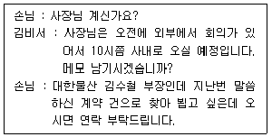
- 손님에게 전화드려 오늘은 상사가 종일 외근 예정이니 내일 방문하시라고 말씀드린다.
- 상사에게 솔직히 말씀드리고 어떻게 처리해야 할지 여쭈어 본다.
- 손님에게 전화드려 솔직하게 상사가 건강이 좋지 않아 오늘 결근하신다고 죄송하다고 말씀드린다.
- 손님이 다시 전화할 때까지 기다려본다.
(정답률: 59%)
6. 상공물산에 근무하는 김 비서는 다음 달에 개최될 상공물산 창립50주년 행사를 준비하고 있다. 이번 행사에서는 상공물산 창립 30주년 행사에서 묻었던 타임캡슐 개봉식이 있다. 따라서 그 당시 상공물산에 재직하였던 전(前) 사장님을 모시고자 하는데 좌석배치를 어떻게 하여야 할지 고민이다. 가장 적절한 것은?
- 전 사장님은 퇴직하시어 현재는 직책이 없기는 하나 일반적 의전예우 기준에 따라 과거의 직책에 따라 좌석 배치한다.
- 전 사장님은 퇴직하시어 현재는 직책이 없기는 하나 예우 상서열은 사내의 이사진들 다음으로 한다.
- 전 사장님은 퇴직하시어 현재는 직책이 없으므로 일반 직원들 좌석 중 상석으로 배치한다.
- 전 사장님은 퇴직하시어 현재는 직책이 없으므로 임원 연령 순으로 하는 것이 가장 바람직하다.
(정답률: 64%)
7. 테이블 매너에 대한 설명으로 바르지 않은 것은?
- 빵은 나이프나 포크로 잘라 먹지 말고 손으로 한입의 분량을 떼어 먹는다.
- 냅킨은 주빈이 먼저 들면 함께 들어서 무릎 위에 둔다.
- 음식을 먹는 도중 냅킨이나 포크가 바닥에 떨어진 경우 웨이터를 불러 새것을 가져다 달라고 요청한다.
- 식사 중 잠시 자리를 뜰 때는 냅킨을 접어서 식탁 위에 둔다.
(정답률: 67%)
8. 보고 방법에 대한 설명으로 적절하지 않은 것은?
- 먼저 보고해야 할 것과 추후에 보고해도 될 것을 구분한다.
- 객관적인 사실과 자신의 의견을 통합해서 보고한다.
- 상사와 면대면 보고가 어려운 상황일 경우는 문자나 메모 등을 활용해 보고한다.
- 시일이 걸리는 일은 중간보고를 통해 진행 상황을 상사가 알 수 있도록 한다.
(정답률: 81%)
9. 오후 외부 회의 참석으로 외출하면서 상사는 비서에게 다음과 같이 지시하였다. 이 때 비서의 보고 태도로 가장 적절한 것은?
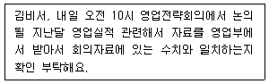
- 오늘 지시받은 일이므로 “영업실적 자료가 오늘 늦게 나오는데 늦더라도 받아서 회의자료와 일치되는지 확인하도록 하겠습니다.” 라고 문자로 보고한다.
- 상사는 외부 회의 참석 중이므로 내일 아침에 보고하기로 한다.
- 회의 때 보고해도 되므로 굳이 늦은 시간에 상사를 귀찮게 할 필요는 없다.
- 영업부에서 늦어지는 것이므로 영업부 직원에게 직접 상사께 보고드리라고 한다.
(정답률: 72%)
10. 다음의 사례를 읽고 상사 개인 정보 관리를 수행하는 비서의 태도로 가장 부적절한 것은?
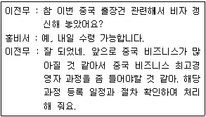
- 중국 비즈니스 최고경영자 과정을 운영하고 있는 기관을 검색해 정리한다.
- 중국 비즈니스 최고경영자 과정의 교육과정, 등록 일정, 수강료 등을 전무님께 보고한다.
- 상사의 중국 출장이 잦아 중국 비자는 단수비자로 신청하였다.
- 전무님의 중국 비자를 수령하는대로 복사하여 사본을 비서가 별도로 보관해 둔다.
(정답률: 70%)
11. 박 비서의 상사는 취미로 유화를 그리는 아마추어 화가이기도 하다. 박 비서는 신문을 읽다가 신생 비즈니스 업체로서 ‘그림 대여업체’ 경영자의 인터뷰 기사를 읽게 되었다. 능동적 총무 업무수행자로서 박 비서의 태도로 가장 부적절한 것은?
- 회사 업무 환경 개선 시 활용할 수 있도록 신문기사를 스크랩해 두었다.
- 사무실 환경의 개선이 필요할 때 ‘그림 대여업체’ 이용을 상사에게 제안해 본다.
- 서비스의 내용, 이용료 등 유사 서비스 업체들을 비교 분석해본다.
- 상사가 해당 업체에 그림을 등록할 수 있도록 상사의 그림 사진을 ‘그림 대여업체’에 보낸다.
(정답률: 70%)
12. 다음은 비서의 하루 중 업무를 기록한 것이다. 비서의 업무 유형 중에서 일상 업무에 속한 것을 고른 것은?
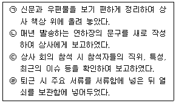
- ㉠, ㉡
- ㉡, ㉢
- ㉡, ㉣
- ㉠, ㉣
(정답률: 80%)
13. 다음 주 다국적기업인 Green Bottle Korea에 아시아 지역 본부장인 Robert Downey씨가 우리 회사를 방문할 예정이다. 황비서의 상사는 Robert Downey씨가 매너에 매우 엄격한 분이므로 한국에 체류하는 동안 황비서가 잘 보좌할 것을 각별히 지시하 였다. 황비서가 Robert Downey를 보좌할 때 지켜야할 의전으로 가장 적절하지 않은 것은?
- 황비서는 기사가 운전하는 차를 타고 공항으로 Downey씨를 모시러 가서 운전석 대각선 자리에 앉게 하였다.
- Downey씨가 부산을 방문하고 싶다고 하여 황비서가 KTX로 동행할 때 Downey씨를 KTX의 순방향의 자리에 앉게 하였다.
- 회의실 문이 당겨서 여는 문이므로 Downey씨가 먼저 들어가도록 한 후 비서가 나중에 들어가 문을 닫았다.
- 회의실에서 Downey씨를 전망이 좋은 출입구에서 가까운 좌석에 앉도록 하였다.
(정답률: 66%)
14. 비서의 업무 수행 방법으로 가장 적절하지 않은 것은?
- 내방객과 함께 엘리베이터를 탈 때 목적층을 상대방에게 미리 말한다.
- 상사의 해외 출장 업무 수행 시 비행기는 일등석으로 예약하고 호텔도 스위트(suite)룸으로 예약한다.
- 복도에서는 방문객의 대각선 방향에서 방문객보다 두서너 걸음 앞에서 안내한다.
- 출장 사후 처리 업무로는 부재중 보고, 결재, 서류정리, 출장비 정산 등의 업무를 수행해야 한다.
(정답률: 69%)
15. 다음 중 비서가 경조사 업무 수행 시 주의해야 할 내용으로 가장 적절하지 않은 것은?
- 규정의 준수 : 경조사 업무는 회사의 경조 규정에 따라 형식을 갖추도록 한다.
- 선례의 참조 : 임원의 경조사 업무는 회사의 규정에 따르기보다는 선임비서의 업무수행 방식을 참조하여 선례에 따른다.
- 시기의 적절성 : 경조사 업무에서는 무엇보다 시기가 중요하다.
- 정보의 정확성 : 경조사 발생 시 정확한 내용 확인은 필수이다.
(정답률: 71%)
16. 다음 중 慶事에 해당하는 한자가 아닌 것은?
- 就任
- 榮轉
- 華婚
- 弔意
(정답률: 39%)
17. 비서의 일정관리 업무 수행 자세로 가장 적절하지 않은 것은?
- 정리된 최종 일정은 상사를 비롯하여 관련 부서나 담당자들, 수행원이나 운전기사에게 만나는 사람이나 장소 및 안건 등 구체적 내용까지 전달하여 공유해야 한다.
- 다이어리로 일정을 관리할 때 일정이 변경될 경우 이전의 일정을 지우지 않고 붉은 색 펜으로 정정한다.
- 컴퓨터와 스마트 폰을 사용하여 일정관리를 할 때는 두기기가 연동되는지 확인해야 한다.
- 다이어리는 보통 1년 기준으로 되어 있으며, 사용 후 버리지 말고 일정 기간 보관하여 참고 자료로 활용 가능하다.
(정답률: 70%)
18. 상황별 전화응대 방법에 대한 설명 중 가장 적절하지 않은 것은?
- 상사가 통화중일 때, 상대방이 계속 기다린다 하더라도 상사의 전화가 금방 끝나지 않을 것으로 예상되면 비서가 다시 전화드릴 것을 제안한다.
- 전화가 잘못 걸려 왔을 때는 그냥 끊어 버리지 말고 우리쪽의 번호나 회사명을 알려 준다.
- 담당자에게 전화를 돌릴 때, 전화가 중간에 끊어질 경우를 대비해 전화를 돌리기 전에 담당자의 전화번호와 이름을 알려 준다.
- 상사가 부재 중일 때 걸려온 전화에는 상사의 부재 사유를 자세하고 친절하게 답변한다.
(정답률: 59%)
19. 김비서는 (주)상공제지 사장님 비서이다. 부사장님의 비서가 전화를 하여 부사장님께서 사장님과 전화통화를 하고 싶다고 하신다. 이 때 직위가 다를 경우 전화 연결 방법으로 가장 적절한 것은?
- 부사장님 비서가 부사장님께 먼저 전화 연결한다.
- 사장님 비서가 사장님께 먼저 전화 연결한다.
- 부사장님과 사장님 두 분 모두 기다리는 시간이 없도록 같이 연결한다.
- 순서는 상관없다. 그 때 그 때 상황에 맞추도록 한다.
(정답률: 64%)
20. 비서의 내방객 안내 방법으로 가장 적절하지 않은 것은?
- 내방객을 안내할 때는 내방객보다 두서너 걸음 앞에서 안내한다.
- 안내할 때는 정확히 가고자 하는 방향을 손가락으로 가리키며 안내한다.
- 모퉁이를 돌 때는 손을 모아 가야 할 방향을 가리킨다.
- 자동 회전문에서는 내방객이 먼저 들어간 후 비서가 나중에 들어간다.
(정답률: 64%)
2과목: 경영일반
21. 다음 중 소유 경영자가 운영하는 기업경영에 대한 설명으로 가장 적절하지 않은 것은?
- 의사결정과정이 단순하며 신속하고 강력한 리더십이 가능하다.
- 장기적인 전망과 투자를 통한 경영이 가능하다.
- 소유경영자는 자기자본을 출자하고 이에 따른 위험을 부담한다.
- 정보 비대칭에서 발생하는 대리인 문제가 나타난다.
(정답률: 54%)
22. 국내의 한 조선회사가 조직의 핵심역량을 파악하고자 SWOT 분석을 아래의 그림과 같이 하고자 한다. 다음 중 빗금 친 ‘W’ 요인의 영역에 해당되는 것으로 가장 적합한 것은?
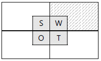
- 지속적인 기술개발
- 정부의 경기부양정책
- 해외수출대상국의 통상압력 강화
- 구조조정에 따른 노사분규
(정답률: 63%)
23. 최근 사회적 비난을 초래하는 다양한 이슈들이 윤리경영의 소홀에서 비롯되면서 기업윤리와 관련된 문제가 많이 회자되고 있다. 다음 중 기업윤리에 대한 설명으로 가장 바람직한 것은?
- 기업윤리는 사회적 규범의 체계로서 경영활동과 독립된 별개의 영역이므로 경영전략에 영향을 주지 않는다.
- 기업윤리는 모든 상황에 보편적으로 적용되는 윤리로서 반드시 법적 강제성이 수반될 필요가 있다.
- 기업윤리 준수가 사회적 정당성을 획득할 수 있는 기반이 될 수 있으나, 장기적인 면에서 조직 유효성 증대에 긍정적 영향을 미치지는 못한다.
- 기업의 경영자와 구성원들이 지켜야할 행동의 기준이며, 혁신을 추구하는 기업가정신을 바탕으로 정당한 방법을 통하여 기업을 올바르게 운영하는 기준을 말한다.
(정답률: 74%)
24. 다음의 내용은 경영환경 중 어떤 이해자 특성을 열거한 것인지, 가장 가까운 것을 고르시오.
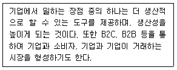
- 경제적환경
- 법적환경
- 경쟁적환경
- 기술적환경
(정답률: 32%)
25. 다음 중 중소기업의 특성으로 가장 적절하지 않은 것은?
- 중소기업은 일반적으로 지역사회와 밀접한 관계를 갖으며 지역문화의 형성에 큰 역할을 한다.
- 중소기업은 원가절감을 위해 소품종 대량생산으로 시장 수요에 대응하고 대기업과의 가격경쟁에서 유리하다.
- 중소기업은 적은 인력으로 생산이 가능하므로 꾸준한 생산기술의 개발로 경쟁우위를 확보할 수 있다.
- 중소기업은 환경적응에 대기업보다 탄력적이고 신축적이므로 독창적 제품이나 아이디어가 있다면 과감하게 투자를 할 수도 있다.
(정답률: 54%)
26. 다양한 기업의 형태에 대한 아래의 설명 중에서 가장 적절하지 않은 것은?
- 기업의 형태를 규모에 따라 구분하면 자본금, 매출액, 종업원 수 등에 따라 대기업, 중견기업, 중소기업으로 구분할 수 있다.
- 합명회사는 회사의 채무에 관해 직접, 연대, 무한책임을 지는 2인 이상의 무한책임사원들로 구성되어 있다.
- 주식회사에서 주주는 회사 채무에 대해서는 직접 책임을 지는 무한책임형태를 갖는다.
- 주식회사는 소유와 경영이 분리되어 있다.
(정답률: 66%)
27. 다음 중 기업들이 해외인수합병을 하는 목적을 설명한 것으로 가장 거리가 먼 것은 무엇인가?
- 신속한 시장진입
- 경영자원의 획득
- 성숙산업에서의 시장진입
- 도덕적 가치의 실행
(정답률: 68%)
28. 다음 중 사업부제 조직의 장점에 대한 설명으로 가장 적절하지 않은 것은?
- 사업부제 조직은 환경변화에 유연하게 대처할 수 있다.
- 사업부제 조직은 책임소재가 명확하고 기능부서간의 조정이 쉽다.
- 사업부제 조직은 자원의 효율적인 활용으로 규모의 경제를 기할 수 있다.
- 사업부제 조직은 사업부문은 독자적인 운영을 하는 분권화의 관리방식을 택한다.
(정답률: 20%)
29. 조직설계를 통해서 조직구조를 결정하는 4가지 기본 요소 중 포함되지 않는 것은 다음 중 무엇인가?
- 분업
- 부문화
- 권한이양
- 라인
(정답률: 52%)
30. 다음은 무엇을 설명한 것인지 보기에서 고르시오.
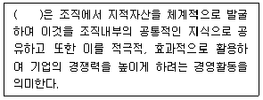
- 창조경영
- 경쟁경영
- 지식경영
- 창의경영
(정답률: 63%)
31. 다음의 리더십에 관한 내용 중 괄호에 들어갈 말을 순서대로 쓴 것을 고르시오.
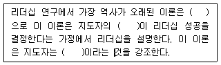
- 행동이론 – 조직적인특성 - 후천적
- 행동이론 – 개인적인특성 - 선천적
- 특성이론 – 조직적인특성 - 후천적
- 특성이론 – 개인적인특성 - 선천적
(정답률: 38%)
32. 다음 중 허즈버그의 2요인이론에 대한 설명으로 가장 적절한 것은?
- 욕구의 순차성을 강조하여 하위수준의 욕구가 충족되어야 다음 단계의 욕구가 동기가 된다.
- 임금과 대인관계는 동기요인으로 종업원의 만족감에 영향을 미친다.
- 종업원의 불만족을 해소하려면 성취감이나 책임감을 부여하는 것이 중요하다.
- 동기요인을 충족시키기 위한 직무설계방법으로 직무충실화가 있다.
(정답률: 27%)
33. 다음의 사례는 경영정보시스템 중 어떤 시스템을 의미하는 것인지 가장 적합한 것을 고르시오.
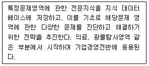
- 전사적 자원관리시스템
- 전문가시스템
- 전략정보시스템
- 고객관리시스템
(정답률: 33%)
34. 다음 중 인적자원관리의 목표로 가장 거리가 먼 것은?
- 우수한 인적자원의 확보
- 노동력 개발
- 우수 고객 확대
- 핵심 노동력 유지
(정답률: 64%)
35. 다음 중 고객과 관련된 다양한 데이터를 수집 및 분석하여 마케팅 효율성을 극대화하는 것으로 가장 적합한 것은 무엇인가?
- 데이터베이스 마케팅
- 오프라인기업의 마케팅
- B2C 마케팅
- B2B 마케팅
(정답률: 69%)
36. 다음의 마케팅믹스 핵심요소 중 하나인 촉진믹스의 인적판매에 관한 설명으로 가장 적절하지 않은 것은?
- 인적판매는 목표시장에 효율적으로 자원을 집중할 수 있는 활동이다.
- 인적판매는 즉시적 피드백을 가능하게 하므로 소비자의 욕구를 보다 직접적으로 알 수 있다.
- 인적판매는 전형적인 풀(Pull)정책으로 유통업자들을 대상으로 촉진활동을 한다.
- 인적판매방식은 높은 비용이 들 수 있다.
(정답률: 44%)
37. 다음 중 회계상 거래에 해당하는 것들로만 묶인 것은?
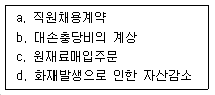
- b, d
- a, b
- a, c
- c, d
(정답률: 47%)
38. 아래와 같이 사치품 관련한 가격이 오르는데도 수요가 줄어들지 않고 오히려 증가하는 현상을 나타내는 용어로 가장 적절한 것은?
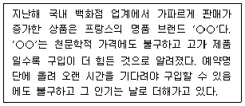
- 베블런효과
- 립스틱효과
- 분수효과
- 붉은여왕효과
(정답률: 49%)
39. 다음 중 기업이 어느정도의 경영성과를 거두었는지를 측정하는 수익성비율과 가장 거리가 먼 것은?
- 매출액이익률
- 자기자본비율
- 주당순이익
- 총자산이익률
(정답률: 66%)
40. 다음 중 기업의 자산, 부채, 자본과 관련한 설명으로 가장 적절 하지 않은 것은?
- 자산 : 회사가 영업활동을 위해 보유하고 있는 재산을 말하는 것이다. 자산은 크게 현금화의 정도에 따라 유동자산과 비유동자산으로 구분한다.
- 무형 자산 : 형태가 없는 자산을 의미하며, 주로 영업권, 산업재산권, 라이센스와 프랜차이즈, 저작권, 컴퓨터 소프트 웨어, 개발비, 임차권리금, 광업권, 어업권 등과 같은 무형의 권리가 여기에 해당된다.
- 부채 : 현재 또는 미래에 타인에게 지급할 채무를 의미한다.
- 자산 : 사업주가 투자하는 자금으로 기업의 총자산과 총부채를 합한 금액이다.
(정답률: 63%)
3과목: 사무영어
41. Which of the following is NOT a term related to the type of company?
- Conglomerate
- Subsidiary
- Executive
- Holdings
(정답률: 42%)
42. Choose one which has a spelling error.
- Mr. Yonghyun Park created friendly atmosper.
- This product is temporarily out of stock.
- The board of directors unanimously approved the plan.
- Your duties in the company should be reported to your immediate supervisor.
(정답률: 35%)
43. Choose the sentence that doesn't have a grammatical error.
- Badges will be provided and must be weared at all times.
- I think Khoop is a exclusively company in the software market.
- I'd like to reconfirm my flight reservation again.
- Please note that the next meeting will be held on Tuesday.
(정답률: 25%)
44. Put the sentences in the most appropriate order.
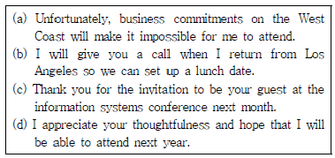
- (b) – (d) – (a) – (c)
- (d) – (a) – (b) - (c)
- (c) – (a) – (d) – (b)
- (d) – (b) – (a) - (c)
(정답률: 52%)
45. What type of writing is this?
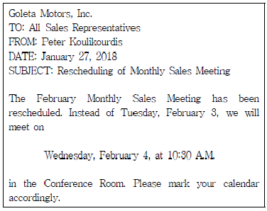
- Interoffice Memorandum
- Minutes of the meeting
- Company to company business letter
- Draft about the sales report
(정답률: 39%)
46. Choose the LEAST appropriate English expression.
- 당사는 사상 최고의 매출을 달성했습니다. We have achieved record sales.
- 이 시장의 규모는 얼마나 됩니까? What is the size of the market?
- 가격이 높지만 제품의 질이 좋습니다. The price is expensive, but the product is qualitative.
- 시장의 성장률은 어느 정도입니까? What is the growth rate of the market?
(정답률: 36%)
47. Which of the following is the most appropriate order?
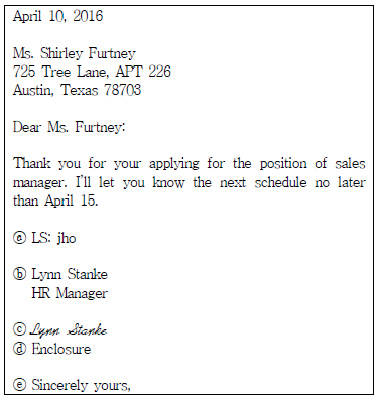
- ⓔ - ⓑ - ⓒ - ⓓ - ⓐ
- ⓐ - ⓒ - ⓑ - ⓔ - ⓓ
- ⓔ - ⓒ - ⓑ - ⓐ - ⓓ
- ⓒ - ⓑ - ⓔ - ⓐ - ⓓ
(정답률: 51%)
48. What is the main purpose of this letter?
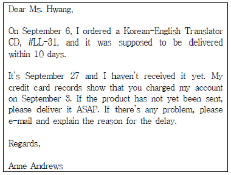
- In order to cancel about shipping delivery
- In order to arrange on shipping delivery
- In order to complain on shipping delivery
- In order to order some product
(정답률: 62%)
49. Which information does NOT have to be included in the minutes?
- the place, date, and time of the meeting
- an account of all reports, or resolutions made
- a record of attendance such as the number of members in attendances
- the phone number of the person in charge of the conference room reservation
(정답률: 35%)
50. Which of the following is the most appropriate expression for the blank?
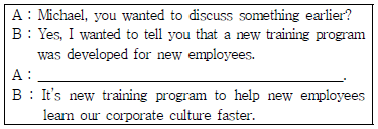
- Would you tell me the business affairs?
- Could you tell me more slowly?
- Let’s move on to the next topic.
- Could you say a little bit more about the new program?
(정답률: 66%)
51. Which is not true according to the following guidelines?
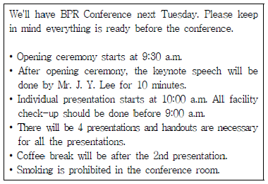
- 모든 발표마다 유인물을 준비하여야 한다.
- Mr. J. Y. Lee가 10분 동안 기조연설을 할 예정이다.
- 매 발표 후 휴식시간이 있을 예정이다.
- 발표에 필요한 기자재 확인은 9시 전에 마쳐야 한다.
(정답률: 66%)
52. According to the following Mr. Choi's schedule, which one is NOT true?
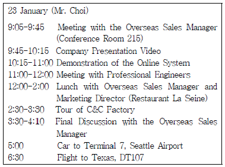
- Mr. Choi visits C&C Factory.
- Mr. Choi leaves Texas in the evening.
- The Overseas Sales Manager has lunch with Mr. Choi and Marketing Director.
- There is a final discussion after the tour of factory.
(정답률: 40%)
53. According to the following conversation, which one is true?
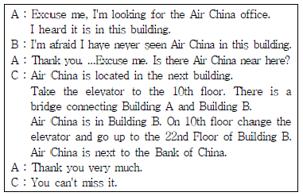
- Air China is on the 22nd floor of Building A.
- The Bank of China is behind the Air China.
- You can't find Air China office around here.
- There is a connecting bridge between Building A & B on the 10th floor.
(정답률: 58%)
54. According to the following conversation, which is the most appropriate for the blank?
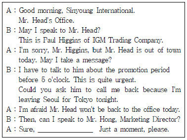
- I'll put you through to Mr. Hong.
- I'll transfer you to Mr. Hong.
- I'll put your call through to Mr. Hong.
- I'll switch you to Mr. Hong's office.
(정답률: 29%)
55. Fill in the blanks of the phone call with the best word(s).
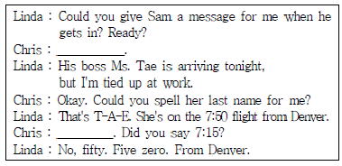
- Go ahead. - Pardon me
- You're welcome. - Certainly
- Never mind. - You might say that
- You can say that again. - Don't mention it
(정답률: 47%)
56. According to the following phone conversation, which is the most appropriate order?
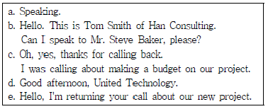
- b - e – a – c - d
- b – c – a – d – e
- d – b – a – e – c
- d – e – c – b - a
(정답률: 60%)
57. Which of the following would be an appropriate phone greeting at a place of business?
- This is Megahimart. Who is this?
- Hi, Megahimart.
- Good morning. Megahimart. May I help you?
- Hello.
(정답률: 66%)
58. Read the following conversation and choose the most appropriate common word for the blank ⓐ and ⓑ.
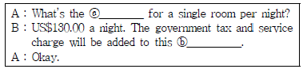
- rate
- charge
- fee
- fare
(정답률: 40%)
59. According to the following conversation, which one is true?
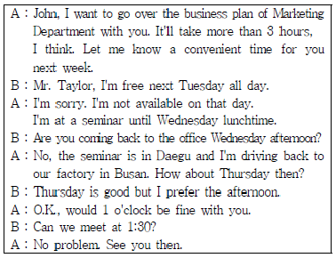
- Mr. Taylor asks John to go over the Marketing Department's business plan by himself.
- Mr. Taylor will lead a seminar in Daegu with Marketing staffs.
- Mr. Taylor and John will go over the Marketing Dept's business plan next Thursday afternoon.
- Mr. Taylor will be back to the office next Wednesday.
(정답률: 62%)
60. According to the following car offer, which is true?
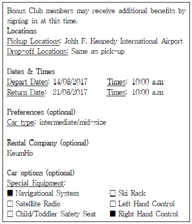
- Mr. Park should drop off the rental car at the Incheon Int'l Airport.
- The Rental car has a navigational system and ski rack.
- Mr. Park will rent a mid-size car for 7 days.
- Mr. Park wants to rent a car from Hertz.
(정답률: 55%)
4과목: 사무정보관리
61. 상공상사의 최문영 비서는 상사에게 온 우편물을 한꺼번에 개봉 하던 중, 다른 부서로 가야 할 우편물이 포함된 것을 모르고 개봉해 버렸다. 이때 최비서가 취할 수 있는 가장 바람직한 업무처리 방법은?
- 상사와 관련 없는 우편물이므로 폐기한다.
- 내용을 읽어보고 다른 부서에도 필요하지 않다고 판단되면 폐기한다.
- 다시 봉인하여 해당 부서로 보낸다.
- 개봉 사유에 대한 간단한 메모를 적어 봉투에 같이 첨부하여 해당 부서로 보낸다.
(정답률: 72%)
62. 기안문의 수신란에 대한 설명으로 가장 잘못된 것은?
- 내부결재 문서는 수신란을 비워둔다.
- 수신자명을 표시하고 괄호안에 업무를 처리할 보조기관을 표시한다.
- 수신자의 처리기관이 명확하지 않은 경우에는 ‘~업무 담당자’로 쓴다.
- 수신자가 여러 곳인 경우 두문의 수신란에 ‘수신자 참조’라고 표시하고 결문에 수신자를 나열한다.
(정답률: 44%)
63. 마케팅실 실장인 상사의 다음 지시 내용에 따라 김진우 비서가 작성할 문서에 대해 가장 적절치 못한 것은?
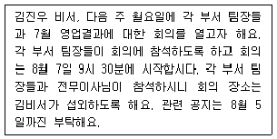
- 작성한 문서의 종류는 대내문서이다.
- 문서의 제목은 ‘7월 영업 결과를 위한 마케팅 팀 회의 소집’으로 정했다.
- 지시를 받고 김비서는 문서 작성을 위해 회의 장소 섭외부터 계획했다.
- 문서의 수신자는 마케팅실 실장, 각 부서 팀장, 전무이사이다.
(정답률: 48%)
64. 문서는 조직에서의 의사전달과 의사 보존이라는 두 가지 기능을 한다. 다음 중 같은 기능끼리 묶이지 않은 것을 고르시오.
- 결정, 승인을 구함 - 사내외의 증거 물건으로 활용
- 작업을 명령하고 지시함 –조사결과와 의견을 보고
- 역사적 사실 기록 –업무사항을 분류, 구분
- 연락, 통지, 양해를 구함 –어떤 사항의 요구와 의뢰를 함
(정답률: 28%)
65. 최비서는 주총을 준비하며 주주들에게 관련 서류를 발송하려고 한다. 이 때 수신자인 주주에게 붙이는 경칭으로 가장 적합한 것은?
- 주주 님 앞
- 주주 귀하
- 주주 귀중
- 주주 각위
(정답률: 33%)
66. 다음 중 잘못된 표현을 올바르게 수정한 것에 해당하지 않는 것은?
- 생각컨대 → 생각건대
- 무우말랭이 → 무말랭이
- 허섭스레기 → 허접쓰레기
- 백분률 → 백분율
(정답률: 40%)
67. 다음 중 의례 문서의 성격이 가장 다른 하나는?
- 김철수 비서는 상사의 부사장 취임시 축하를 해준 지인들에게 의례 문서를 작성했다.
- 안희성 비서는 상사가 출장 중 현지 담당자에게 신세를 많이 진것에 대한 의례 문서를 작성했다.
- 이현옥 비서는 상사의 아버님 장례식장에 참석해 주신 지인들에게 의례 문서를 작성했다.
- 고근하 비서는 거래처의 사옥 준공에 대한 의례 문서를 작성했다.
(정답률: 55%)
68. 다음과 같이 문서를 관리하고 있다. 이 중 가장 올바르지 않은 문서관리 방법은?
- 보존 문서 중 보존기간이 만료된 문서는 곧바로 폐기처분한다.
- 활용빈도가 낮은 문서 중 매수가 많은 일지 등은 부서장의 판단하에 보관기간 만료전에도 이관할 수 있다.
- 문서 보관방법 중 집중식 관리는 분실의 우려가 적은 반면 이용절차가 복잡하다.
- 문서의 보존기간은 법률적으로 정해지는 경우와 법적 의무와 관계없이 활용도에 따라 보존기간이 정해지는 경우로 나뉜다.
(정답률: 46%)
69. 다음은 무역회사에서 근무하는 최주혁 비서가 받은 명함의 영문이름이다. 알파벳순으로 정리할 경우에 순서가 가장 올바르게 나열된 것은?
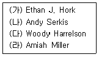
- (다) – (가) – (라) – (나)
- (나) – (라) – (가) - (다)
- (다) – (가) – (나) – (라)
- (라) – (나) – (가) - (다)
(정답률: 39%)
70. 다음 설명에 해당하는 저장매체로 가장 적절한 것은?
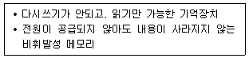
- ROM
- 광디스크
- RAM
- 플래시메모리
(정답률: 38%)
71. 다음 중 전자문서 장기보존 국제표준은?
- PDF/Z
- PDF/S
- PDF/L
- PDF/A
(정답률: 53%)
72. 다음 중 인터넷 검색 및 관련 용어에 대한 설명이 가장 잘못된 것은?
- 키워드 검색 방식은 찾고자 하는 데이터와 관련된 핵심적인 단어를 키워드로 입력해 데이터를 찾는 방식이다.
- 통합형 검색 방식은 인터넷에 있는 웹 문서들을 주제별 또는 계층별로 정리하여 데이터를 찾는 방식이다.
- 컴퓨터의 쿠키 파일에는 사용자가 웹사이트에 접속했던 기록들이 담겨 있다.
- 로그파일은 컴퓨터 시스템의 모든 사용 내역을 기록하고 있는 파일이다.
(정답률: 39%)
73. 다음 중 올바른 신문 스크랩 방법으로 가장 거리가 먼 것은?
- 김영철 비서는 선택한 기사의 맨 위쪽에 출처와 날짜, 신문사 등의 내용을 표시했다.
- 최훈 비서는 신문 스크랩을 할 때는 본인의 생각이나 의견을 함께 적어두지 않는다.
- 최보민 비서는 선택한 기사의 내용을 요약하여 모르는 용어와 함께 정리한다.
- 이종수 비서는 신문의 헤드라인과 정치, 경제, 금융 등의 부분을 읽으면서 스크랩할 기사를 선택한다.
(정답률: 48%)
74. 다음 중 메타 검색엔진의 장점으로 가장 적절하지 않은 것은?
- 각 검색 엔진마다 다른 사용자의 입력형태를 하나로 통일함으로써 초보자가 쉽게 이용할 수 있다.
- 여러 검색 엔진을 동시에 구동시킴으로써 각 검색 엔진을 하나씩 구동시키는 것에 비해 효율적인 검색이 될 수 있다.
- 구체적 검색어를 잡아내기 어려운 검색이나, 해당 분야에 대한 지식이 없을 경우 가장 사용하기 용이한 검색엔진이다.
- 하나의 검색 엔진 이용 시에 놓칠 수 있는 정보를 여러 검색 엔진을 통하므로 좀 더 광범위한 검색이 가능하다.
(정답률: 41%)
75. 다음은 대한기업과 우리기업의 지출항목을 보여주는 표이다. 두 회사의 각 지출항목별 금액과 총지출금액을 동시에 비교하여 보여주고자 할 때 가장 효과적인 그래프의 종류는 무엇인가?
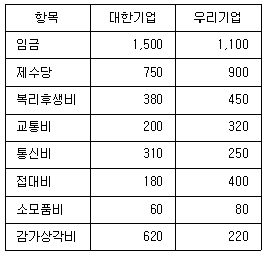
- 막대그래프
- 원그래프
- 누적막대그래프
- 혼합그래프
(정답률: 41%)
76. 다음 중 효과적인 프레젠테이션에 대한 설명으로 가장 옳지 않은 것은?
- 시간이 지날수록 집중력이 떨어지므로 프레젠테이션 시간은 짧을수록 좋다.
- 파워포인트나 프레지 같은 프로그램을 사용하여 청중의 시선을 끌어들인다.
- 발표 후 청중의 질문이나 의견 등 피드백을 유도한다.
- 시간이 길어질 경우 매 15분 단위로 동영상을 삽입하거나 주제를 바꾸어 주의를 환기시킨다.
(정답률: 35%)
77. 다음 중 저작권 침해와 가장 거리가 먼 사례는?
- 회사 관련 뉴스를 모아 사내 게시판에 게재했다.
- 관리하는 블로그에 뉴스가 직접 뜨도록 연결해 놓았다.
- 비영리 회사 사보에 저작권자의 이용 허락없이 뉴스 저작물을 인쇄해 사용하였다.
- 인터넷에서 검색한 뉴스 기사를 이용하여 시험문제를 작성 하였다.
(정답률: 31%)
78. 김비서는 사내 사무용품을 구매하고 용품을 수령한 후 비용처리를 위해 전자세금계산서를 확인하였다. 다음 중 반드시 확인해야 하는 내용은?
- 판매담당자 이름
- 공급처 결재권자의 승인여부
- 세금계산서 작성시간
- 공급가액과 부가가치세액
(정답률: 45%)
79. 다음 중 명함 어플리케이션의 사용법이 가장 올바르지 않은 것은?
- 비서 본인이 사용하기 편리한 명함 어플리케이션을 핸드 폰에 다운로드 받는다.
- 명함 어플리케이션에 저장한 후 종이 명함은 폐기한다.
- 상사의 핸드폰에도 동일한 명함 어플리케이션을 다운로드 받아 연동시킨다.
- 명함 어플리케이션의 비용 지불은 사내 비용 담당자와 상의한다.
(정답률: 61%)
80. 아래 명함 데이터베이스에 대한 설명으로 가장 옳지 않은 것은?
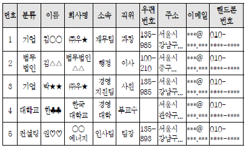
- 이름 필드는 각각의 레코드를 유일하게 구별할 수 있는 기본키가 된다.
- 번호, 분류, 이름, 회사명, 소속, 직위, 우편번호, 주소, 이메일, 핸드폰번호를 필드명이라고 한다.
- 소속, 주소, 우편번호, 이메일, 핸드폰번호 필드는 필수입력이 아닌 선택입력으로 설정하였다.
- 회사의 분류를 기업, 법무법인, 대학교, 컨설팅 등으로 구분 하였다.
(정답률: 34%)